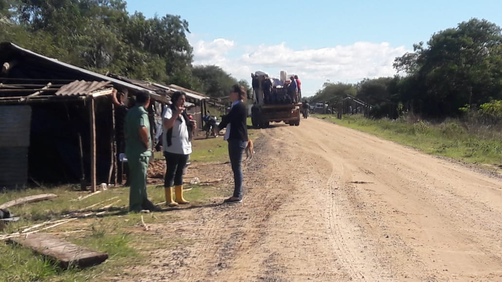

Disminución y Descendencia
Antes de la independencia del Paraguay, los Payaguaes del sur llamados "Agaces", comenzaron a sufrir el mestizaje con los Paraguayos y con los indígenas, debido a su reducido número y más a las devastadoras epidemias, terminó diezmandolos.

En cambio los Sarigüé, durante la Guerra de la triple alianza se tenían registros de 500 individuos que vivían en Asunción, de los cuales solo 17 habían sobrevivido al conflicto, entre ellos se encontraba el sargento Cuatí que es conocido por salvar la vida al general Jose Eduvigis Díaz de ahogarse; la última Payaguá era María Domínguez Miranda que falleció en 1942; sin embargo los mestizos que forman parte de sus descendientes Sarigüé y Agacé llegarían a las 3000 personas, que viven en las localidades ribereñas como Chaco´í, San Antonio, Nanaway en mayor número en Ricardo Brugada.